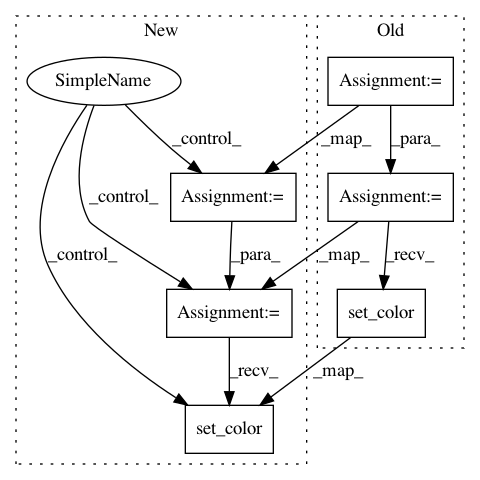

f701967d1c4ecd7f679dd9e9e09388c8960e8fcf,examples/showcase/xkcd.py,,,#,11
Before Change
// Based on "The Data So Far" from XKCD by Randall Monroe
// http://xkcd.com/373/
fig = plt.figure()
ax = fig.add_axes((0.1, 0.2, 0.8, 0.7))
ax.bar([0, 1], [0, 100], 0.25)
ax.spines["right"].set_color("none")
ax.spines["top"].set_color("none")
ax.xaxis.set_ticks_position("bottom")
ax.set_xticks([0, 1])
ax.set_xlim([-0.5, 1.5])
After Change
// Based on "The Data So Far" from XKCD by Randall Monroe
// http://xkcd.com/373/
fig = plt.figure()
ax = fig.add_axes((0.1, 0.2, 0.8, 0.7))
ax.bar([0, 1], [0, 100], 0.25)
ax.spines["right"].set_color("none")
ax.spines["top"].set_color("none")
ax.xaxis.set_ticks_position("bottom")
ax.set_xticks([0, 1])
ax.set_xlim([-0.5, 1.5])
In pattern: SUPERPATTERN
Frequency: 3
Non-data size: 6
Instances
Project Name: matplotlib/matplotlib
Commit Name: f701967d1c4ecd7f679dd9e9e09388c8960e8fcf
Time: 2018-02-17
Author: quantum.analyst@gmail.com
File Name: examples/showcase/xkcd.py
Class Name:
Method Name:
Project Name: mne-tools/mne-python
Commit Name: bd6f426aa564522b21470ab7510b74a226cc507b
Time: 2020-07-16
Author: larson.eric.d@gmail.com
File Name: mne/viz/_brain/_timeviewer.py
Class Name: _TimeViewer
Method Name: configure_point_picking
Project Name: matplotlib/matplotlib
Commit Name: 8cd9a3b5bbaa0cdb3608d704c2760186f3581946
Time: 2018-02-15
Author: derek.tropf@gmail.com
File Name: examples/showcase/xkcd.py
Class Name:
Method Name: